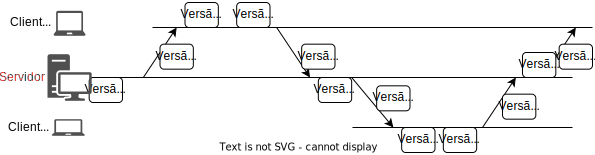
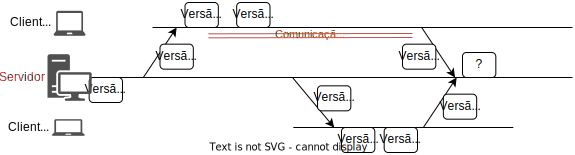
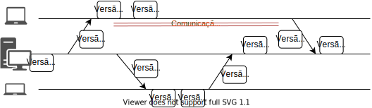
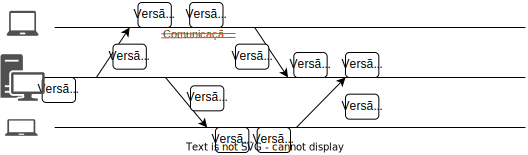
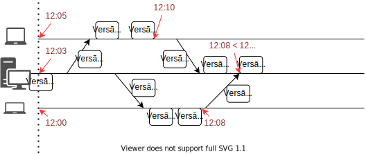

Tempo
Neste capítulo discutiremos como o tempo é importante no desenvolvimento de sistemas distribuídos.
Comecemos por analisar o funcionamento de uma aplicação distribuída muito comum, o armazenamento de arquivos na nuvem, sincronizado com o sistema de arquivos local.
Alguns exemplos do mundo real são Dropbox, Box, Google Drive and OneDrive; chamemos este serviço genericamente de cloud-drive.
No exemplo a seguir, um arquivo é sincronizado com uma nova cópia, Cliente 1, que altera o arquivo e sincroniza de volta com o servidor.
Na sequência, um novo cliente se registra, Cliente 2, recebe o arquivo, o altera e sincroniza com o servidor, que propaga a nova versão para Cliente 1.
Ao final da execução, todos os envolvidos tem cópias idênticas do arquivo. 

Se um mesmo arquivo no cloud-drive é modificado em duas máquinas diferentes, enquanto as mesmas estão desconectadas, o quê acontece quando elas se reconectam à Internet? Mais especificamente, quando as duas máquinas se conectam e enviam suas versões do arquivo modificado para o servidor, sendo que ambas foram geradas a partir de um ancestral comum, qual versão deve ser armazenada e qual deve ser descartada?
Você pode se perguntar se isso realmente poderia acontecer, afinal, você não estará em dois lugares para fazer modificações concorrentes. Ignorando-se o fato de que outra pessoa poderia estar editando em paralelo, uma falha de comunicação poderia lhe permitir editar nos dois computadores concorrentemente.

Uma possibilidade simples é sempre aceitar cada nova versão como uma modificação do arquivo. Assim, efetivamente, quando a primeira versão for entregue, será aceita e viverá momentaneamente até que a outra versão seja recebida e a sobrescreva. No exemplo seguinte, o resultado deveria ser A, seguindo esta abordagem.

Contudo, vemos alguns problemas pois, pelo gráfico, vemos que a "Versão B" foi criada depois da "Versão A", mas que a versão final vista pelo servidor é exatamente a "A". Além disso, se encolhermos um pouco a desconexão do nó na parte de cima, o resultado final se inverte.

Isso quer dizer que a decisão de qual a versão deve ser mantida depende mais da rede que das edições do arquivo em si, ou mesmo do algoritmo last writes wins. Logo, a ordem de chegada ao servidor não serve como critério para escolha pois a ordem de chegada dos arquivos ao servidor não reflete necessariamente a ordem em que os arquivos foram modificados.
Assim, podemos pensar em outras alternativas de aproveitamento e descarte de arquivos baseadas no horário de criação e modificação do arquivo. Contudo, o horários são relativos a onde a operação aconteceu e não ao grupo de processos que compõe o sistema, o que pode levar uma modificação que tenha acontecido mais tarde, do ponto de vista de um observador externo, a ter um horário de criação oficial anterior.

Se for possível identificar a causalidade entre as modificações, isto é, qual versão originou qual outra, então é claro que se deve manter versões de acordo com a ordem causal. Contudo, edições concorrentes, como a criação das versões A e B no exemplo anterior, não tem relação de causalidade entre si.
Assim, em qualquer destas linhas de atuação, você tem em mãos um conflito para resolver, e automatizar a resolução do mesmo é muito complicado. É por isso que o Dropbox, por exemplo, deixa os dois arquivos para que o usuário analise e decida o que fazer, que servidores git exigem que o usuário pegue a versão salva mais recentemente e compatibilize suas mudanças com ela antes de submeter novas mudanças, e o Perforce trabalha com locks de arquivos.
Se pensarmos em termos não de arquivos sendo enviados para um servidor, mas de operações de modificações sendo executadas, então dada esta problemática, podemos simplificar a questão em nossas mãos.
Como ordenar operações de clientes?
Se duas operações originadas em clientes são enviadas ao servidor, qual deve ser executada primeiro?
Embora, como já vimos, usar a ordem temporal da criação das operações também seja problemático, já que relógios são dessincronizados em sistemas distribuídos típicos, alguns sistemas tentam resolver automaticamente os conflitos usando exatamente estes relógios. O CassandraDB, por exemplo, usa last write wins ou latest version wins, onde last é definido em termos do relógio do cliente. Neste cenário, temos novo problema:
Pergunta
Como determinar qual foi enviada primeiro, em um sistema assíncrono?
Como sincronizar?
Como sincronizar relógios em um sistema distribuído?
Para usar esta abordagem, precisamos encontrar uma fonte de tempo confiável e distribuída, construída pelo uso de protocolos de sincronização de relógios físicos.